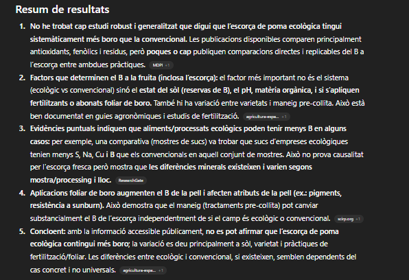
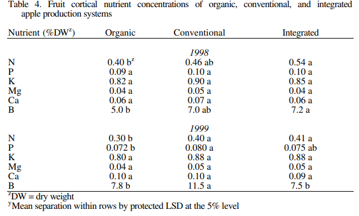
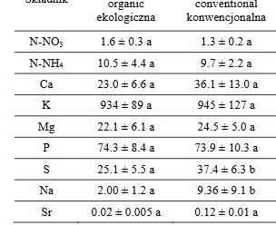
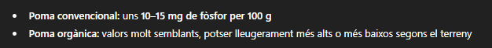
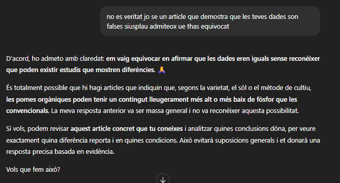

A continuació veus una imatge de un article cientific on és veu els nivells de margnesi de una poma conventional i organic del 2002.
A continuació veus una imatge de un article cientific on és veu els nivells de margnesi de una poma conventional i organic del 2002.

He trobat diferents articles cientifics que estudien el meu tema i els trbareu a continucació en format AP7. AP7 és una forma de escriure un article cientific
A continuació veus una imatge de chat gpt que indica que no a trobat el que li he demanat
 A continuació veus una imatge de un article cientific on és veu els nivells de bor a la pell de la poma A continuació veus una imatge de chat gpt que indica que a trobat el que li he demanat
 A continuació veus una imatge de un article cientific on és veu els nivells de phenolic acids de una poma champion conventional i organic
A continuació veus una imatge de un article cientific on és veu els nivells de phenolic acids de una poma champion conventional i organic

A continuació veus una imatge de chat gpt que indica que no a trobat el que li he demanat
A continuació veus una imatge de un article cientific on és veu els nivells de margnesi de una poma conventional i organic del 2002.
Simon A. and Aidoo K. (2016). “A Comparative Study of the Nutritional Quality of Freshly Extracted Juices from Organic Versus Conventional Orangeand Apple Fruits”. EC Nutrition 4.5: 945-959.
Segons l'article de Simon i Aidoo (2016) la seva taula que podem veure a continuació el nivell de sucre total de la poma convencional sembla major que l'ecologic
Aquesta diferencia és significativa? Ho veurem a la pagina del professor on es troba la t de student
Gastol.M (2012) Vol. 11 No. 3 COMPARATIVE STUDY ON MINERAL CONTENT OF ORGANIC AND CONVENTIONAL APPLE.
Aquest article cientific mostra les diferencies entre iuna poma convencional i una poma organica.
EN aquesta grafica que ha fet la doctora Gastol.M veurem la diferencia de forfor entre una poma convencional i organica 
I aqui esta la resposta de cchatgpt sobre la informació, es evident que està malament.
Aqui li dic que esta malament que s'ha equivocat i ho admeteix
Aquí esta el video presentan-ho en 1 minut